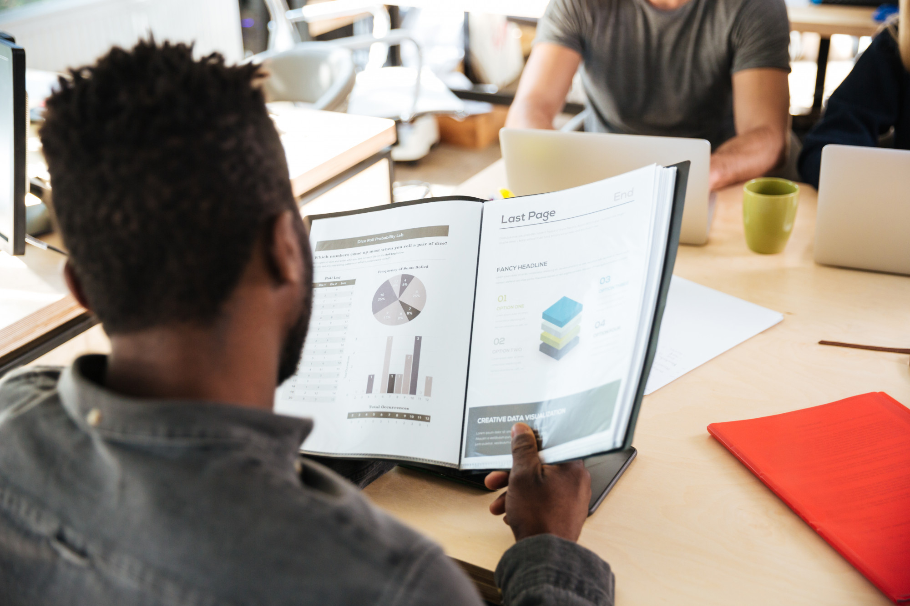
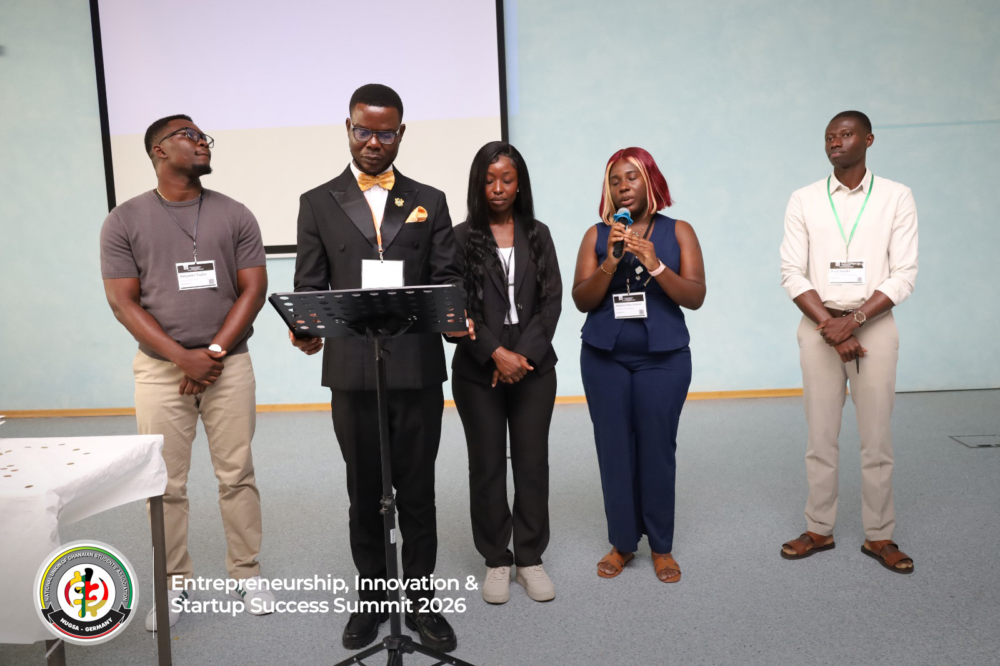
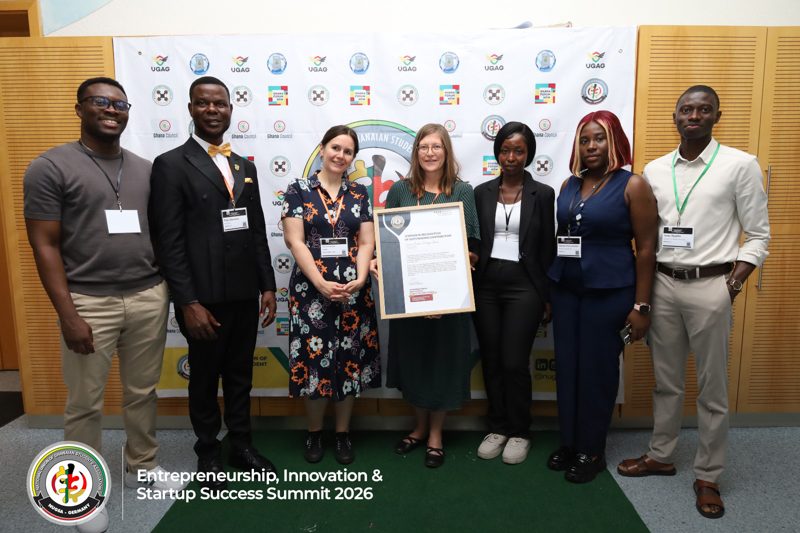
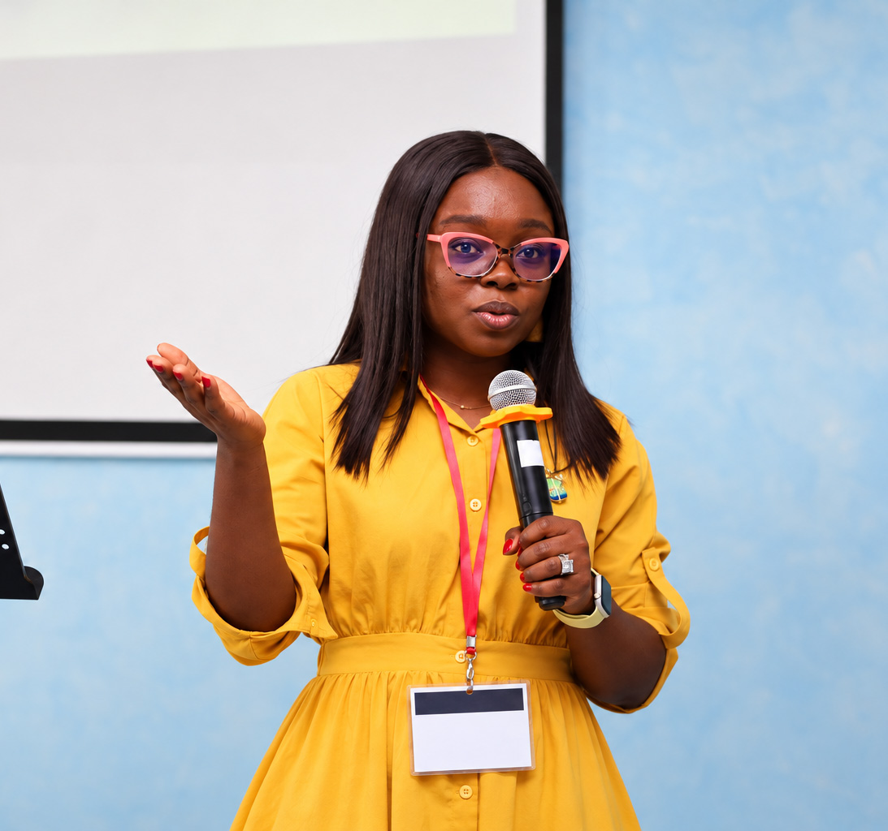

Research & knowledge
Connect scholars around development questions and help credible evidence reach the people who can use it.
Explore the approachConnecting African scholars and researchers with the partners and pathways to turn knowledge into practical solutions.
Discover GRAINResearch · Advisory · Innovation

Connect scholars around development questions and help credible evidence reach the people who can use it.
Explore the approachBring research into feasibility, strategy and project preparation for institutions and partners.
Explore the approachBuild the skills and connections that can help promising ideas become practical ventures.
Explore the approachAfrica's scholars produce ideas with the potential to improve lives and strengthen institutions. GRAIN is being developed to help those ideas travel further — from research questions to evidence, and from evidence to projects that can be tested and grown.
A continent built by its own scholars.
GRAIN vision · 2026–2027 strategic direction
Build relationships between African scholars, universities, industry and institutions across regions.
Shape research and concepts through mentoring, evidence and practical project thinking.
Connect strong ideas with the partners and pathways needed for decisions, projects and enterprise.

The summit in Herne, Germany brought together conversations on ideas, enterprise and impact. Its programme listed GRAIN among the sponsors.
Explore eventThe network's strategic direction links research excellence with advisory work and pathways for innovation.
Read the story
The event poster listed GRAIN as a sponsor and its coordinator among speakers at the Herne gathering.
Explore eventGRAIN FAQs
GRAIN stands for the Global Research, Advisory and Innovation Network. It is being developed to connect African scholars and researchers with partners working on the continent’s development challenges.
GRAIN aims to turn research into useful evidence, practical advice, viable projects and enterprises. It seeks to help scholars apply their work to real challenges.
A continent built by its own scholars.
GRAIN’s planned work covers research and knowledge sharing, advisory and project development, and innovation and enterprise support. This includes connecting researchers, applying evidence to decisions, and helping promising ideas develop into projects and ventures.

Start a conversation about research, project development or innovation.